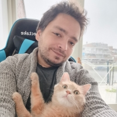

Dr. Vlad Niculae [he/him]
Associate Professor (UHD2, tenured)
Language Technology Lab
Informatics Institute
University of Amsterdam.
Associate Professor (UHD2, tenured)
Language Technology Lab
Informatics Institute
University of Amsterdam.
e-mail: v.niculae at uva.nl
Hi! I’m Vlad. I’m an associate professor at the University of Amsterdam. I specialize in machine learning & natural language processing, focusing on sparsity, structure, and geometry. I obtained my PhD from Cornell in 2018, advised by Claire Cardie, and spent some time as a post-doc in the Sardine lab, Lisbon, Portugal. I am a scikit-learn alumnus core dev.
News¶
- Jan 14, 2026. Invited talk on continuous representation for efficient language models at Bamberg BamNLP.
- Aug, 2025. Teaching Structure Prediction at AthNLP.
- (Past talks).